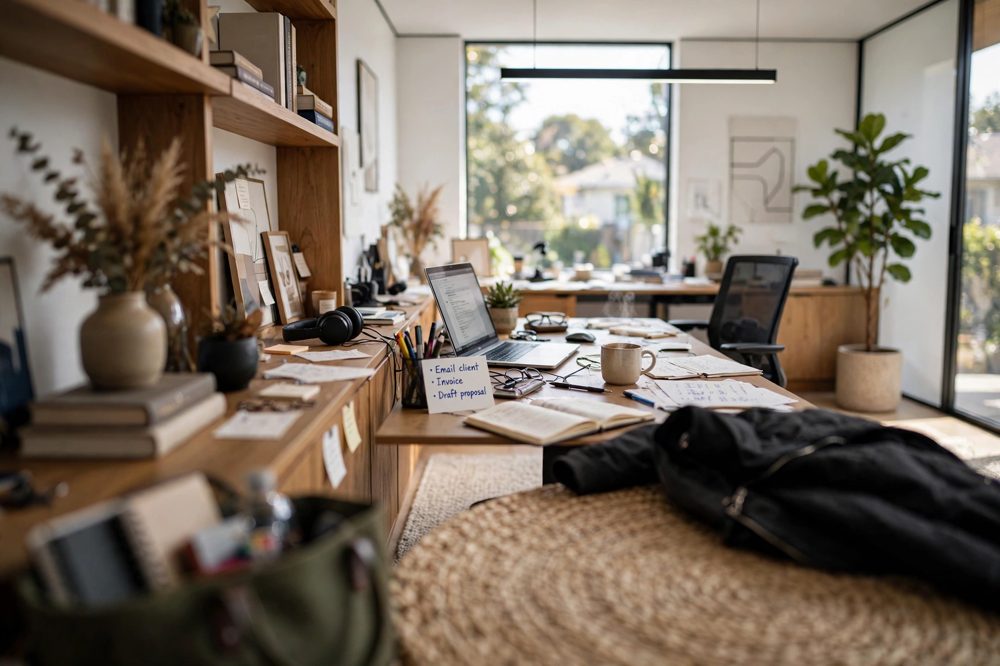

EXTERNAL FOCUS
Signal Lock
Follow a small signal. Let the room come into view.

A place to put your attention
Tap two signals. See what appears.
No rush. Nothing to get wrong.
Session ended
There is no right answer. You can leave this unanswered.